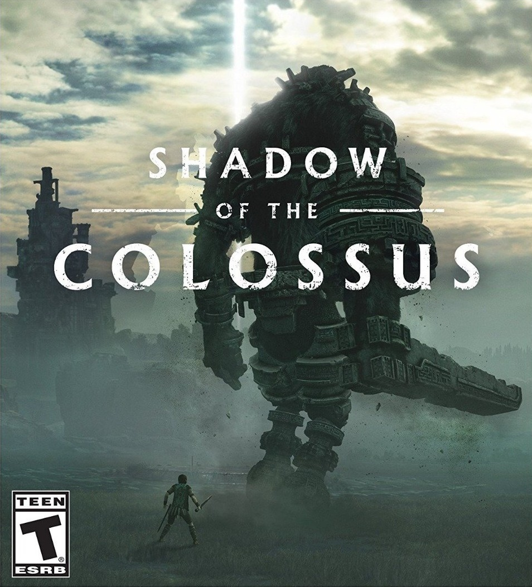

Meu nome é Vinícius Manoel Rochel Vieira.
Tenho 17 anos de idade.
Eu estou no 3° ano do Ensino Médio e estudo no
'Instituto Federal de São Paulo Campus Itapetininga'
Eu não tenho um gosto específico para filmes, gosto de Filmes Históricos,
de Ação, Ficção Científica, Suspense, Terror.


Eu também gosto muito de Jogos de Videogame, é uma das minhas paixões




E o meu GIF favorito, sem dúvidas, é Homem Aranha Japonês de Metralhadora, é sério, esse GIF é incrível: